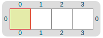
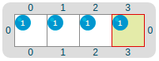
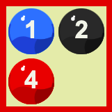
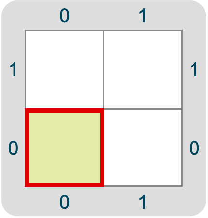

Un programa es la descripción de la solución a un problema que puede ser ejecutada por una computadora. Está compuesto por la secuencia de instrucciones necesarias para que pueda lograr su cometido. Al ejecutar el programa la computadora llevará a cabo lo que le indiquen dichas instrucciones. El código fuente (o simplemente, código) es la forma en que escribimos estas instrucciones en un lenguaje de programación determinado.
La sintaxis es el conjunto de reglas de escritura del lenguaje en el que estamos programando.
Un programa que no cumpla con la sintaxis del lenguaje no va a poder ser “comprendido” por la computadora. Por ejemplo, la sintaxis establece cuándo usar mayúsculas o minúsculas, cuándo abrir y cerrar paréntesis, llaves o corchetes, qué palabras tienen un uso reservado, etc.
Por otro lado, la semántica es el significado de las instrucciones que creamos respetando la sintaxis del lenguaje, lo que interpreta y puede hacer la computadora al ejecutar nuestro código.
Un paradigma de programación es un conjunto de conceptos, estrategias y buenas prácticas que nos brindan un marco para resolver problemas de programación y comunicar su solución a otras personas.
Tal como los seres humanos nos comunicamos utilizando distintos lenguajes, para darle instrucciones a una computadora deberemos hacerlo utilizando algún lenguaje de programación. Hay muchos y cada uno tiene sus características, reglas sintácticas, convenciones y aplicaciones. Si bien cuando programamos podemos encontrar palabras en inglés u otros idiomas, los lenguajes de programación siguen reglas totalmente diferentes de las de aquellos.
Algunos lenguajes sirven para cualquier tipo de problema (lenguajes de propósito general) y otros sirven para hacer cosas específicas. Por ejemplo:
Una computadora es cualquier máquina capaz de almacenar y procesar información para ayudarnos a resolver problemas. Si bien solemos asociar el término al clásico aparato con una pantalla y un teclado, los teléfonos inteligentes (smartphones), televisores inteligentes (smart TV) y tablets también son computadoras que cumplen funciones más específicas.
Equivocarse es una parte importante de aprender a programar, los errores pueden enseñarnos más sobre cómo plasmamos nuestras ideas en los programas y sobre las particularidades del lenguaje elegido. Entre los errores más comunes podemos encontrar:
Gobstones es un lenguaje gráfico desarrollado por docentes e investigadores de la Universidad Nacional de Quilmes, diseñado para la enseñanza de ideas básicas de programación.
Su representación visual facilita la ejercitación de la abstracción y la contextualización. Por eso es el lenguaje que elegimos para presentar los fundamentos de la programación.
El tablero es una cuadrícula compuesta por celdas. Las distintas tareas que hacen nuestros programas con las bolitas y el tablero nos permiten representar y resolver problemas muy variados. Podemos ver su estado antes y después de ejecutar un programa.
Cada celda del tablero puede contener un número ilimitado de bolitas que pueden ser de cuatro colores diferentes: Negro, Verde, Rojo y Azul. Las herramientas que nos provee Gobstones para manipular las bolitas nos permiten lograr diferentes configuraciones del tablero para modelar situaciones y resolver problemas.
El cabezal es un punto de referencia que se ubica en una celda determinada (la celda actual), y recibe y ejecuta las instrucciones que operan sobre el tablero y las bolitas, como ponerlas, sacarlas, contar cuántas hay y moverse desde su celda actual hacia otras del tablero.
En Gobstones nos toparemos frecuentemente con el ¡Boom! Esta explosión es una representación gráfica para avisarnos que le estamos pidiendo a la computadora que haga algo que no puede resolver, por ejemplo cuando intentamos hacer movimientos fuera del tablero o sacar bolitas de una celda en la que no las hay.
Los lenguajes cuentan con palabras reservadas para fines específicos, eso significa que no podemos usarlas en cualquier situación. Algunos ejemplos de Gobstones son program, procedure y function.
Para crear un programa en Gobstones debemos escribir la palabra program en minúsculas y a continuación, entre llaves { }, sus instrucciones. Los programas en Gobstones no llevan nombre. program es la palabra reservada de Gobstones para indicar el comienzo de un programa.
program {
Mover(Este)
Poner(Azul)
}
Los procedimientos son una herramienta de los lenguajes que nos permiten agrupar dentro de un bloque de código instrucciones que realizan una tarea específica, y darle un nombre. Nos ayudan a crear programas más claros, porque al utilizarlos organizamos mejor los pasos que resuelven un problema, describimos mejor nuestra estrategia y evitamos repetir lógica.
Todos los procedimientos llevan un nombre que explica la tarea que realiza. Es importante que sea un nombre expresivo, es decir, que deje claro lo que hace. De esa forma, cuando leemos su nombre podemos entender su objetivo a simple vista, sin necesidad de profundizar en cómo está hecho.
Los procedimientos son una herramienta muy útil para organizar la resolución de un problema. Identificar y separar las partes que componen un problema nos permite resolver las pequeñas tareas que lo conforman y, al reunirlas, poder solucionarlo. Al utilizar procedimientos reconocemos esas tareas, les ponemos nombre y las resolvemos definiendo un nuevo procedimiento. De esta forma tenemos el procedimiento creado y a disposición para invocarlo todas las veces que sean necesarias.
La definición de un procedimiento es la porción de código que desarrolla la tarea que resuelve. Esta definición no implica su uso, solo su existencia. Para definir un procedimiento debemos utilizar la palabra reservada procedure luego el nombre elegido en con la primera letra de cada palabra en mayúsculas (DeEstaForma) seguido por paréntesis (). Por último, entre llaves, las acciones y comandos que lo conforman. Por ejemplo:
procedure PonerUnaBolitaDeCadaColor(){
Poner(Rojo)
Poner(Verde)
Poner(Azul)
Poner(Negro)
}
En otras palabras, al definir un procedimiento estamos indicando las instrucciones precisas que ejecutará al ser invocado.
Invocar un procedimiento es utilizarlo. Para hacerlo hay que escribir su nombre y los paréntesis dentro de un programa, función u otro procedimiento. Al ejecutar un programa que incluya la invocación a uno o varios procedimientos la computadora podrá ponerlos en acción. Por ejemplo, si quisieramos invocar el procedimiento PonerUnaBolitaDeCadaColor dentro de un programa deberíamos escribir:
program {
PonerUnaBolitaDeCadaColor()
}
El procedimiento no tendrá ningún efecto hasta que no lo invoquemos en al menos un lugar.
La repetición es una herramienta de programación que nos permite automatizar la repetición de alguna tarea indicando el número de veces consecutivas que deseamos hacerla.
La palabra reservada para la repetición simple es repeat, y va seguida por el número de repeticiones entre paréntesis y los comandos a repetir entre llaves. Por ejemplo:
program{
repeat(5){
Poner(Azul)
}
}
Tenemos que prestar atención al orden en el que damos las instrucciones que reúne la repetición para garantizar que al comienzo y al final (o en los “bordes”) se comporte como esperamos. Si no consideramos los casos bordes en una repetición en la que combinamos acciones y movimientos en el tablero es muy probable que pasemos celdas sin completar la acción deseada o nos salgamos de los márgenes del tablero. Una buena estrategia para evitarlo es considerar el último caso por fuera de la repetición.
Por ejemplo, queremos colocar una bolita azul en cada celda de este tablero:

Si intentamos repetir la acción de Poner(Azul) y Mover(Este) cuatro veces, en el último paso vamos a estar fuera de los márgenes del tablero y las instrucciones no serán válidas. Si, en cambio, repetimos esas acciones tres veces no colocaremos una bolita azul en la última celda.
La solución es hacer tres repeticiones y por fuera de su estructura nos encargamos de poner la bolita en la última celda:
program{
repeat(3){
Poner(Azul)
Mover(Este)
}
Poner(Azul)
}
De esa forma el tablero obtenido será este:

Cuando queremos generalizar el comportamiento de un procedimiento para que se adecúe a distintas situaciones de uso similares, podemos utilizar parámetros. Los parámetros no tienen un valor determinado en el momento de la definición del procedimiento, pero pueden tomar potencialmente cualquier valor (siempre que tenga sentido). El parámetro es un "agujero" que debemos completar con la información particular que necesitemos al invocar el procedimiento.
Al definir el procedimiento incluiremos entre paréntesis el parámetro (o parámetros) con un nombre descriptivo en minúsculas. Por ejemplo:
// Este procedimiento nos permitirá movernos dos celdas en cualquier dirección.
procedure Mover2PasosHaciaEl(dirección) {
Mover(dirección)
Mover(dirección)
}
Al invocar el procedimiento tendremos que pasarle un argumento en la misma posición que el parámetro correspondiente. Cada argumento es el valor específico que reemplazará al parámetro que le corresponda en cada una de sus apariciones dentro de la definición de la función o procedimiento invocado.
// Al invocar el procedimiento podemos elegir hacia qué dirección queremos movernos. Por ejemplo, si quisiéramos un programa que nos permita movernos dos celdas al Oeste deberíamos hacer:
program {
Mover2PasosHaciaEl(Oeste)
}
Cuando un problema presenta escenarios que pueden variar necesitamos algún tipo de herramienta para evaluar el contexto y tomar decisiones. La alternativa condicional se ocupa precisamente de esto. ¿Cómo lo hace? Primero evalúa el valor de verdad de una expresión booleana, que actúa de condición y según se cumpla o no, realiza una acción determinada. Por ejemplo, tenemos que decidir qué hacer según la cantidad de bolitas de una celda, si un número es mayor que otro o si llegué a un extremo del tablero.
La alternativa condicional se compone de una estructura de control que utiliza la palabra if (que significa “si” en inglés). Se escribe if, la condición y entre llaves las acciones que se deben realizar si la condición se cumple. Si la condición no es verdadera no se van a ejecutar las instrucciones entre las llaves, sino que el programa seguirá su curso normal con los comandos fuera de éstas.
program {
if(hayBolitas(Azul)) {
Sacar(Azul)
} // en este caso si hay al menos una bolita azul va a sacar una.
}
Si queremos hacer una acción específica cuando no se cumple la condición del if (y solo en ese caso), podemos utilizar la sentencia else (si no en inglés).
program {
if(hayBolitas(Azul)) {
Sacar(Azul)
} else {
Poner(Azul)
} // en este caso si hay al menos una bolita azul va a sacar una. Si no hay ninguna bolita azul va a poner una.
}
Al igual que los procedimientos, las funciones nos permiten dividir el problema en subtareas para evitar repeticiones y hacer más fácil de entender la solución. La diferencia entre ambos es que las funciones no describen acciones sino que encapsulan expresiones, realizan algún tipo de procesamiento con información de su contexto y devuelven un resultado, sin ningún efecto real sobre el tablero. Lo que retorne la función debería ir entre paréntesis a continuación de la palabra return.
La definición e invocación de funciones también debe tener un nombre claro y descriptivo que indique con precisión qué hace y cuál será el resultado que nos retornará esa función. A diferencia de los procedimientos, las funciones se definen utilizando la palabra function y su nombre con la primera letra de cada palabra en mayúsculas a excepción de la primera (deEstaForma). Por ejemplo:
function nroBolitasTotal() {
return (nroBolitas(Azul) + nroBolitas(Negro) + nroBolitas(Rojo) + nroBolitas(Verde))
}
Poner(color)Pone una bolita del color indicado en la casilla actual. Ejemplo:
program {
Poner(Rojo) // pone una bolita roja en la casilla actual.
}
Sacar(color)Saca una bolita del color indicado de la casilla actual. Ejemplo:
program {
Sacar(Negro) // saca una bolita negra de las que hay en la casilla actual.
}
Mover(direccion)Mueve el cabezal indicador de la casilla actual un paso hacia la dirección indicada. Ejemplo:
program {
Mover(Este) // mueve el cabezal una vez hacia el Este.
}
IrAlBorde(direccion)Lleva el cabezal todo lo que se puede hacia la dirección indicada. Ejemplo:
program {
IrAlBorde(Norte) // mueve el cabezal de la celda actual a la última celda en la dirección Norte.
}
VaciarTablero()Saca todas las bolitas del tablero, dejando el cabezal en la posición en la que estaba. Ejemplo:
program {
VaciarTablero() // En un tablero con alguna o muchas bolitas, las saca todas.
}
nroBolitas(color)Retorna un número: la cantidad de bolitas del color indicado que hay en la casilla actual. Ejemplo, asumiendo la siguiende celda actual:

nroBolitas(Rojo) // retorna 4
opuesto(direccion)Retorna una dirección: la dirección opuesta a la provista. Ejemplo:
opuesto(Norte) // retorna Sur
opuesto(numero)Retorna un número: el original, negado. Ejemplo:
opuesto(59) // Retorna -59
siguiente(direccion)Retorna una dirección: la siguiente a la recibida como argumento, es decir, la próxima en sentido horario. Ejemplo:
siguiente(Oeste) // retorna Norte
siguiente(Norte) // retorna Este
siguiente(Este) // retorna Sur
siguiente(Sur) // retorna Oeste
previo(direccion)Retorna una dirección: la anterior a la recibida como argumento, es decir, la próxima en sentido anti horario. Ejemplo:
previo(Sur) // retorna Este
hayBolitas(color)Retorna un booleano: es verdadero cuando en la casilla actual hay al menos una bolita del valor indicado. Ejemplo, asumiendo la siguiende celda actual:
hayBolitas(Rojo) // retorna verdadero
hayBolitas(Verde) // retorna falso
puedeMover(direccion)Retorna un booleano: es verdadero cuando el cabezal puede moverse en esa dirección (o sea, no está en el borde). Por ejemplo, estando el cabezal en la esquina de abajo a la izquierda:

puedeMover(Norte) // retorna verdadero
puedeMover(Oeste) // retorna falso